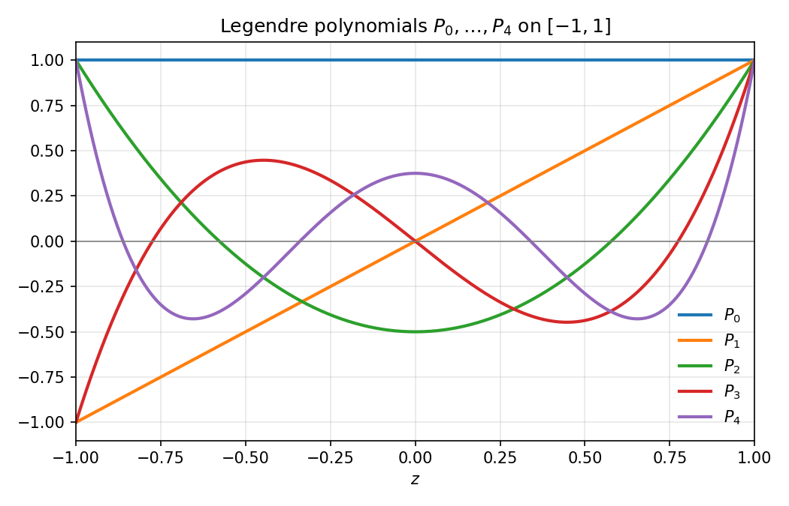
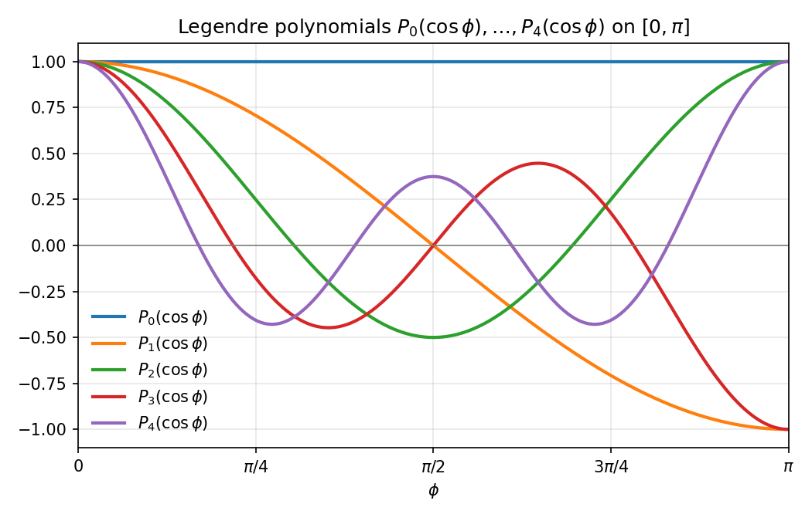

The Legendre Equation
The Legendre Equation
In these notes we will show how ideas from the spectral theorem apply in the setting of differential equations. We will not focus on analytic details here, but rather try to illustrate the algebraic structure.
The Laplace Equation
We begin by considering the two dimensional Laplace equation \nabla^2 f(x,y) = \left(\frac{\partial^2}{\partial x^2} + \frac{\partial^2}{\partial y^2}\right)f(x,y) = 0
The solutions to this equation are called harmonic functions. They arise as the real parts of holomorphic functions, and as solutions to a variety of important physical problems in 2 dimensions.
Separation of variables
We will attack this equation by expressing it in polar coordinates. In polar coordinates, the Laplace equation becomes
\nabla^2 f = \frac{1}{r}\frac{\partial}{\partial r}\left(r\frac{\partial f}{\partial r}\right)+\frac{1}{r^2}\frac{\partial^2 f}{\partial \theta^2}
If we set f(r,\theta) = R(r)\Theta(\theta), then we get the equation \frac{1}{r}(rR')'\Theta + \frac{1}{r^2}R\Theta'' = 0.
We can rearrange this to get \frac{r(rR')'}{R} = -\frac{\Theta''}{\Theta}
The left side is a function of r, and the right side is a function of \theta. So for them to be identically equal for all r and \theta, they must both be equal to a constant \lambda. In other words, \Theta''=-\lambda\Theta, and r^2R'' + rR'-\lambda R=0.
Eigenvalue point of view
Let’s look at the equation \Theta''=-\lambda\Theta. \Theta is a function on the circle with angular coordinate \theta, so it is a periodic function with period 2\pi. The space of complex valued periodic functions of a real variable with period 2\pi is a kind of inner product space; the inner product is \langle f, g\rangle = \int_{0}^{2\pi} f\overline{g}\, d\theta (The catch is that this is an infinite dimensional space, so our theory doesn’t apply directly, but let’s not worry about that for now.)
Using integration by parts, you can show that \langle -\frac{d^2f}{d\theta^2},g\rangle = \langle f, -\frac{d^2g}{d\theta^2}\rangle
so the second derivative operator is self-adjoint. In addition, \langle -\frac{d^2f}{d\theta^2},f\rangle = \int_{0}^{2\pi} \left|\frac{df}{d\theta}\right|^2d\theta\ge 0 so this is a positive operator as well.
The spectral theorem (or at least, its infinite dimensional version) tells us that there is an orthonormal basis of eigenvectors for the second derivative operator. We know that the solutions to \frac{d^2f}{d\theta^2} = -\lambda f
are f=A\exp(\pm\sqrt{-\lambda}\theta). If \lambda<0, then \sqrt{-\lambda} is real and positive and the function f isn’t periodic, so that can’t happen. If \lambda=0, then f=a+b\theta; since it’s periodic, b=0 so f is constant. If \lambda>0, then \sqrt{-\lambda}=\pm i\sqrt{\lambda}. The corresponding exponential is only periodic if \sqrt{\lambda} is an integer, meaning \lambda = n^2 for $n=1,2, $.
The R equation has solutions r^{n} and r^{-n} if n\ge 1; if n=0 the solutions are of the form a+b\log(r).
In the special case where the solutions are required to be defined at r=0, the general solution is
f = a_{0}+\sum_{n\ge 1}r^{n}(c_{n}\cos(n\theta) + d_{n}\sin(n\theta)).
For complex valued functions you have
f(re^{i\theta}) =f(z) = \sum_{n=0}^{\infty} a_{n}z^{n}+\sum_{n=1}^{\infty} b_{n}\overline{z}^{n}.
The 3d case
Now we look at the three dimensional Laplace equation:
\Delta f = \left(\frac{\partial^2}{\partial x^2} + \frac{\partial^2}{\partial y^2} + \frac{\partial^2}{\partial z^2}\right)f(x,y,z)=0.
We will study solutions to this equation which are invariant under rotations around the z-axis. In other words, if we write f in spherical coordinates r,\theta,\phi, then f is independent of \theta.
Under this assumption, we use the separation of variables trick to look for solutions of the form f(r,\phi)=R(r)\Phi(\phi).
In spherical coordinates, assuming the derivatives with respect to \theta are zero, the Laplacian becomes:
\Delta f = \frac{1}{r^2}\frac{\partial}{\partial r}\!\left( r^2 \frac{\partial f}{\partial r} \right) + \frac{1}{r^2}\,\Delta_{S^2} f
where
\Delta_{S^2} f = \frac{1}{\sin\phi}\frac{\partial}{\partial \phi}\!\left( \sin\phi \, \frac{\partial f}{\partial \phi} \right).
If we substitute our factorization f(r,\phi)=R(r)\Phi(\phi) into this version of the Laplace equation, and make the further substitution z=\cos(\phi) and write \Phi(\phi)=P(z), the Laplace equation splits into two ODEs:
\begin{aligned} r^2R'' + 2rR' - \lambda R &=0 \\ (1-z^2)P''-2zP' +\lambda P &=0 \end{aligned}
where the \lambda arises as in the discussion of the two dimensional case from the fact that if a function of r alone equals a function of z alone for all r and z, then both must be equal to the same constant.
As in the two-dimensional case, the boundary conditions impose constraints on the constants \lambda. Specifically, our solution has to be bounded at the poles \phi=0 and \phi=\pi, meaning the points where z=\cos\phi=\pm 1.
To see how this condition fixes the possible values for \lambda, propose a power series solution P(z) = \sum_{i=0}^{\infty} a_{i}z^{i} around zero. From the differential equation, one obtains a two-term recurrence relation for the a_{i}. It links only coefficients of the same parity, so the even and odd terms of P(z) are determined separately: a_{i+2} = \frac{i(i+1)-\lambda}{(i+1)(i+2)}a_{i}. For general \lambda, we see that a_{i+2}/a_{i} \sim \frac{i(i+1)}{(i+1)(i+2)} so the ratios a_{i+2}/a_{i} approach 1 as i\to\infty. In other words, for general \lambda, the solutions to the differential equation have radius of convergence 1 and by looking more closely at the growth rate of the coefficients one can show that they blow up at z=\pm 1.
However, if we consider the even and odd recurrences separately, and there is a value i for which \lambda=i(i+1), then a_{i+2}=0 and so the “power series” solution becomes a polynomial which is defined at z=\pm 1. Let the solution with \lambda=n(n+1) satisfying P_{n}(1)=1 be called P_{n}(z).
If \lambda=k(k+1) for some nonnegative integer k, then solving the first equation r^2R'' + 2rR' - \lambda R =0 by setting R(r)=\sum a_{n}r^{n} yields the condition: (n(n-1)+2n-k(k+1))a_n=(n(n+1)-k(k+1))a_{n}=0 so either a_{n}=0 or n=k. (One can also have n=-k-1 for k\ge 0, which yields the solution 1/r, but we only consider solutions that extend to the origin.) In other words the solutions are R_{n}(r)=Ar^{n} for n\ge 0.
When the dust settles, we obtain solutions f_{n}(r,\phi) = Ar^{n}P_{n}(\cos(\phi)).
The Legendre Polynomials
The polynomials P_{n}(z) corresponding to \lambda=n(n+1) are called the Legendre polynomials. The differential equation defining them is the “eigenvalue” equation LP_{n}(z) = \left((1-z^2)\frac{d^2}{dz^2} -2z \frac{d}{dz}\right)P_{n}(z) = -n(n+1)P_{n}(z).
The “Legendre operator” L is self-adjoint with respect to the inner product: \langle f,g\rangle = \int_{-1}^{1}fg\,dz on the space of twice differentiable functions on [-1,1].
One proves this by integration by parts, which is made easier by the hint: LP =\frac{d}{dz}\left((1-z^2)\frac{d}{dz}P\right)
The finite dimensional version
Let V_{N} be the (N+1)-dimensional space of polynomials of degree at most N. The operator L preserves this space; in fact, the powers z^{k} form a basis for V_{N} and L(z^{k})=-k(k+1)z^{k}+k(k-1)z^{k-2}.
The matrix of L is upper triangular, with distinct diagonal entries -k(k+1), so L is diagonalizable; and since it is self-adjoint with respect to the restriction of the inner product above to V_{N} it has an orthonormal basis of eigenvectors.
Since P_{k} has degree k, and is orthogonal to P_{j} for j<k, up to a normalization factor P_{k} must be the result of the Gram–Schmidt process applied to 1,z,\ldots, z^{k}, normalized so that the resulting polynomials have P_{n}(1)=1 instead of \|P_{n}\|^2=1.

